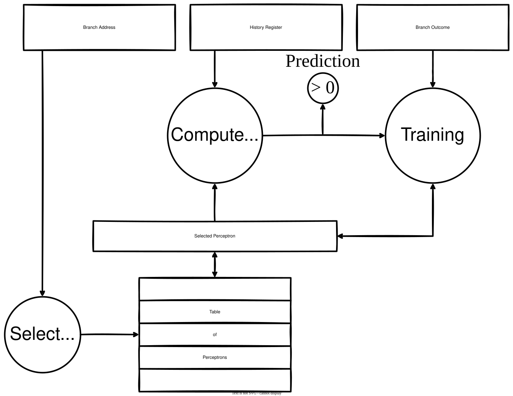

Computer Architecture 2025fall Project 2
By Prof. Jie Zhang
Due: 11:59:59 pm, November 5, 2025
In this project, you will explore the design, implementation, and robustness of branch predictors (BPs) using ChampSim. First, you will familiarize yourself with configuring, building, and creating branch predictor modules under the branch/ directory by following the provided tutorial. Next, by studying common predictor architectures and reading assigned research papers (such as the perceptron branch predictor), you will design and implement your own branch predictors. In addition, you will construct adversarial counter-examples (specifically engineered branch patterns) to attack the predictors and evaluate their worst-case behavior. Finally, you will measure the system performance impact of different configurations and compare your custom predictors against ChampSim’s baseline modules.
Whenever you face trouble or problems with this project, please contact TAs by WeChat or e-mail. All the following information has been verified on Ubuntu 20.04.1 with Linux Kernel 5.15.0 and Ubuntu 22.04.2 LTS with Linux Kernel 5.19.0.
Part 1: Add Branch Predictor in the Configuration Script
In this part, we will configure and build ChampSim with different branch predictors. In ChampSim, branch predictor implementations are located under the branch/ directory.
ChampSim is natively a detailed out-of-order (O3) CPU simulator, so you do not need to manually change the CPU model. To select a specific branch predictor, you can configure the "branch_predictor" field in the build JSON script (lab2_config.json).
ChampSim provides several built-in branch predictors in the branch/ directory. In this part, we will focus on three of them: bimodal, gshare, and hashed_perceptron. You can specify the desired branch predictor in lab2_config.json as follows:
{
"ooo_cpu": [
{
"frequency": 4000,
"rob_size": 352,
"branch_predictor": "bimodal",
"btb": "basic_btb",
"mispredict_penalty": 15
}
]
}
(To test gshare or hashed_perceptron, simply change "bimodal" to "gshare" or "localbp" in lab2_config.json.)
After updating the JSON file, generate the build files and compile ChampSim:
./config.sh ./lab2_config.json
make -j $(nproc)
Next, let me run the trace files and examine how these branch predictors impact system performance. ChampSim is trace-driven, and trace files are typically stored in *.champsimtrace.xz format. Among the provided workloads, shell_sort and spfa are sensitive to branch predictor performance, while gemm and binary_search are insensitive. In Project 2, you are only required to run the sensitive workloads (shell_sort and spfa).
To test the performance of the bimodal predictor, run the following execution commands:
# Run with the compiled bimodal executable
bin/champsim --warmup-instructions 20000000 --simulation-instructions 100000000 ../trace/shell_sort.champsimtrace.xz
bin/champsim --warmup-instructions 20000000 --simulation-instructions 100000000 ../trace/spfa.champsimtrace.xz
The process for testing gshare and local_bp is similar: update "branch_predictor" in lab2_config.json, re-compile with ./config.sh and make, and then re-run the trace files using the commands above.
In this project (Parts 1 to 3), setting --simulation-instructions to 100000000 (1e8) or 200000000 (2e8) is sufficient to clearly observe performance differences among branch predictors while saving simulation time.
After the simulation finishes, ChampSim will output execution statistics directly to the terminal (or stdout log). Pay attention to the following metrics in the summary output:
- CPU 0 cumulative IPC: Indicates overall processor performance.
- Branch Prediction Accuracy / MPKI: Reflects conditional branch prediction quality.
If accuracy is not printed directly, you can calculate it using the printed total branch instructions and misprediction counts:
Please run the two BP-sensitive workloads (shell_sort and spfa) across all three branch predictors. The remaining workloads (gemm and binary_search) are insensitive to BP; you can run them for extra exploration if interested.
In your report, please include figures or tables showing the Branch Prediction Accuracy, MPKI and CPU IPC for the following combinations:
- Branch Predictors:
bimodal,gshare,local_bp - Traces:
shell_sort,spfa - Configuration: Default 1-core configuration with no prefetchers
In total, you need to execute ChampSim six times.
Part 2: Implement a Simple BP
A prediction result of a BP can be 'taken' (represented by 1), which means the branch instruction should take the branch and jump to the branch target, or 'not taken' (represented by 0), which means the branch instruction should not branch. In this part, we will build a simple static branch predictor (simple_bp), which always predicts 'taken'.
ChampSim provides built-in branch predictors in the branch/ directory and modularizes branch predictors purely in C++. Adding a new branch predictor in ChampSim only requires creating a new folder with source files inside the branch/ directory and implementing a few interface functions.
In ChampSim, core structures such as the Branch Target Buffer (BTB) and Return Address Stack (RAS) are handled by the main simulation framework. In this project, your implementation will mainly focus on predicting conditional branch outcomes inside your custom predictor module under branch/ (specifically implementing predict_branch() and last_branch_result()).
To create our simple branch predictor, let's create a new directory named simple_bp under the branch/ directory, and add simple_bp.cc and simple_bp.h inside branch/simple_bp/:
cd branch
mkdir simple_bp
// branch/simple_bp/simple_bp.h
#ifndef BRANCH_SIMPLE_BP_H
#define BRANCH_SIMPLE_BP_H
#include "modules.h"
#include "msl/fwcounter.h"
#include <array>
#include <cstdint>
struct simple_bp : champsim::modules::branch_predictor {
bool predict_branch(champsim::address ip);
void last_branch_result(champsim::address ip, champsim::address branch_target, bool taken, uint8_t branch_type);
};
#endif
// branch/simple_bp/simple_bp.cc
#include "simple_bp.h"
// Predict whether a branch is taken (1) or not taken (0)
uint8_t simple_bp::predict_branch(uint64_t ip, uint64_t predicted_target, uint8_t always_taken, uint8_t branch_type) {
// Always predict 'taken'
return 1;
}
// Update predictor state after branch execution
void simple_bp::last_branch_result(champsim::address ip, champsim::address branch_target, bool taken, uint8_t branch_type) {
// Static predictor does not update any state.
}
Let's look at the two key interface functions required by ChampSim:
predict_branch(): Called when a conditional branch is fetched. It receives the branch instruction address (ip) and returns1for taken or0for not taken.last_branch_result(): Called when the branch instruction is executed/committed and its actual outcome (taken) is known. You use this callback to update your prediction tables or history registers.
Next, to compile ChampSim with our new simple_bp, set "branch_predictor": "simple_bp" in lab2_config.json:
{
"ooo_cpu": [
{
"frequency": 4000,
"rob_size": 352,
"branch_predictor": "simple_bp",
"btb": "basic_btb",
"mispredict_penalty": 15
}
]
}
Then, generate the build scripts and compile ChampSim:
./config.sh ./lab2_config.json
make -j $(nproc)
After compilation succeeds, run the compiled binary on the two BP-sensitive workloads (shell_sort and spfa):
bin/champsim --warmup-instructions 20000000 --simulation-instructions 100000000 ../trace/shell_sort.champsimtrace.xz
bin/champsim --warmup-instructions 20000000 --simulation-instructions 100000000 ../trace/spfa.champsimtrace.xz
Please run two BP-sensitive workloads (shell_sort and spfa) with your implemented simple_bp. In your report, please include figures or tables showing the prediction accuracy (or MPKI) and CPU IPC for:
- BP:
simple_bp - Traces:
shell_sort,spfa - Configuration: Default 1-core configuration with no prefetchers
In total, you need to execute ChampSim twice.
Part 3: Read Paper, Implement your own Perceptron BP
A Brief Introduction to 2-Bit Local BP and GShare Predictor
Before designing your own branch predictor, we first review two foundational dynamic branch predictors: the 2-bit local BP and the GShare predictor.

As shown in Fig (a) above, the 2-bit local BP contains a table of saturating counters. When a branch instruction is fetched, the BP indexes into the counter table using the instruction's PC. The BP predicts 'taken' if the counter value is 2 (10) or 3 (11), and 'not taken' if the counter value is 0 (00) or 1 (01). When the actual branch outcome is resolved, the corresponding counter in the table is updated: it is incremented by 1 (saturating at 3) if the actual outcome is 'taken', and decremented by 1 (saturating at 0) if 'not taken'.
However, the outcome of a branch is often strongly correlated with the outcomes of other recent branches. A local predictor that relies solely on a single branch's past behavior (like the 2-bit local BP) cannot capture these inter-branch correlations.
To leverage global branch history, the GShare predictor introduces a Global History Register (GHR), as shown in Fig (b) above. The GHR maintains a shift register where each bit represents the outcome of a recent conditional branch instruction (1 for taken, 0 for not taken). When a branch outcome is resolved, the GHR updates via a bitwise shift:
GHR = ((GHR << 1) | outcome) & GHR_MASK;
When indexing into the counter table, GShare XORs (hashes) the instruction's PC with the GHR. This hash ensures that global history is factored into table indexing, allowing the predictor to distinguish between different execution paths leading to the same branch.
A Brief Introduction to Perceptron BP
Now, we introduce the Perceptron Branch Predictor, originally proposed by Jiménez and Lin:
Jiménez, Daniel A. and Calvin Lin. “Dynamic branch prediction with perceptrons.” Proceedings HPCA Seventh International Symposium on High-Performance Computer Architecture (2001): 197-206.
The perceptron BP replaces traditional 2-bit saturating counters with artificial perceptrons. A perceptron is represented as a vector of signed integer weights (), where is a bias weight and correspond to the bits in the GHR.
- Prediction: Instead of checking counter thresholds, the BP selects a perceptron using the branch PC and computes the dot product of its weight vector and the GHR (treating GHR bits as and as ):
If , the BP predicts 'taken' (1); otherwise, it predicts 'not taken' (0).
- Training/Update: Once the actual branch outcome is known, the predictor trains the selected perceptron weights. A weight is incremented if the historical outcome matches , and decremented if it differs. To avoid overtraining, training only occurs if:
- The prediction was incorrect,
- The absolute value of the dot product is within a predefined threshold ().
Note: As part of this lab, you are required to read the paper cited above and summarize its key design in your report.
Designing and Implementing Your Own BP
In this part, you are required to design and implement your custom branch predictor in ChampSim. Your grade for this section will be based on correct functionality, architectural optimizations, and relative performance ranking.
Design Freedom & Ideas
You can implement the baseline perceptron predictor described in the paper, or explore advanced variations to achieve better branch accuracy and CPU IPC, such as:
- Hyperparameter Tuning: Finding the optimal global history length , number of perceptrons, and training threshold .
- Improved Hashing Functions: Designing better PC/GHR hashing logic to mitigate aliasing/collisions.
- Hybrid & Local History: Combining global branch history with local history tables (e.g., Perceptron with Local History).
- Weight Quantization & Budget Limits: Managing weight bit-widths effectively.
Starter Skeleton
We have provided a code skeleton under the branch/my_perceptron/ directory (my_perceptron.h and my_perceptron.cc). You need to fill in the missing logic in ChampSim's interface functions:
predict_branch(): Select the predictor entry, compute prediction logic (e.g., dot product), and return1('taken') or0('not taken').last_branch_result(): Train predictor weights/counters based on prediction correctness and threshold criteria, then update the branch history.
If you are unsure how to manage branch history or table indexing in ChampSim, you can check built-in predictors in the branch/ directory (such as gshare/ or bimodal/) for reference.
Compiling and Running
To compile ChampSim with your custom BP, update "branch_predictor": "your_perceptron" in lab2_config.json, then build and run:
# 1. Update lab2_config.json to set "branch_predictor": "your_perceptron"
./config.sh ./lab2_config.json
make -j $(nproc)
# 2. Run test traces
bin/champsim --warmup-instructions 20000000 --simulation-instructions 100000000 ../trace/shell_sort.champsimtrace.xz
bin/champsim --warmup-instructions 20000000 --simulation-instructions 100000000 ../trace/spfa.champsimtrace.xz
Your implementation will be evaluated using both the public traces (shell_sort, spfa) and additional hidden evaluation workloads. Total points for this part consist of:
- Basic Functionality & Correctness (70%): Correctly implementing a working predictor that successfully completes all simulation runs without crashes and surpasses the
local_bpbaseline. - Performance Ranking & Optimization (30%): Graded competitively based on your predictor's Branch Prediction Accuracy (MPKI) and CPU IPC against your peers on the benchmark suite:
- Top 10% Performance: Full ranking score.
- Above Average: High performance score.
- Base Perceptron Baseline: Standard performance score.
Please evaluate your implemented my_perceptron predictor against all baselines.
In your report, please include:
- Paper Summary: A concise summary (1–2 pages) covering the motivations, key challenges, and perceptron design/training mechanisms described in the Jiménez & Lin paper.
- Custom BP Design Details: Explain your specific implementation, architectural choices, hashing logic, parameter selections (, table sizes), and any extra optimizations you added.
- Performance Evaluation & Comparison: Figures or tables comparing Branch Prediction Accuracy / MPKI and CPU IPC of your
my_perceptronagainstsimple_bp,local_bp, andgshareacross the tested workloads.
Files to submit:
- Source code: Files under
branch/my_perceptron/(my_perceptron.handmy_perceptron.cc). - Lab report: PDF file including the paper summary, design details, and performance analysis.
Part 4: Crafting a Hard Trace Benchmark for Branch Prediction
In this part, you will flip your role from a hardware designer to a software/workload developer. You are required to design, compile, and generate a custom ChampSim trace that serves as a stress test for branch predictors.
Background & Objective
Standard benchmarks like sorting or matrix multiplication often exhibit regular loops and repetitive control flow patterns. However, real-world software—such as database indexing, cryptosystems, binary parsers, and graph analytics—contains complex, data-dependent, and highly unpredictable branch behavior.
Your goal is to write a C/C++ program featuring intricate control flow that maximizes branch prediction difficulty, compile it, and collect a trace file using ChampSim's trace collection tools.
Guidelines for Designing Unpredictable Workloads
To create a high-difficulty trace that forces frequent mispredictions across standard predictors, consider incorporating:
- Data-Dependent Branches: Branches whose outcomes depend on unpredictable data (e.g., pseudo-random number generators, cryptographic hashes, or Collatz conjecture sequences).
- Long-History Dependencies: Control flow patterns where branch outcomes correlate with events that happened beyond typical global history lengths ().
- Irregular Memory & Pointer Chasing: Unstructured graph traversals (e.g., BFS/DFS on sparse graphs, skip lists, or unbalanced tree searches).
- High-Entropy Conditional Statements: Interleaved conditional logic that induces heavy aliasing (collisions) in branch target/predictor tables.
Installing Intel PIN
Before generating the ChampSim trace, you need to install Intel PIN, a dynamic binary instrumentation framework used by the ChampSim tracer.
Download the Linux x86-64 version of Intel PIN from the official Intel website:
wget https://software.intel.com/sites/landingpage/pintool/downloads/pin-external-4.3-99850-gce5652921-gcc-linux.tar.gz
You should download a file with a name similar to: pin-external-4.3-99850-gce5652921-gcc-linux.tar.gz. For this lab, use the Linux x86-64 version compatible with your environment.
Then create a directory for PIN and extract the downloaded archive:
mkdir -p ~/tools
cd ~/tools
tar -xzf pin-external-4.3-99850-gce5652921-gcc-linux.tar.gz
After extraction, you should see a directory similar to: ~/tools/pin-external-4.3-99850-gce5652921-gcc-linux/. Inside this directory, the PIN executable should exist:
ls ~/tools/pin-external-4.3-99850-gce5652921-gcc-linux/pin
PIN_ROOT point to the root directory of the extracted Intel PIN package.
For example:
export PIN_ROOT=$HOME/tools/pin-external-4.3-99850-gce5652921-gcc-linux
Trace Generation Rules & Constraints
- Instruction Limit: The trace evaluation is strictly limited to 200 million instructions (
200,000,000/200M). Your trace generator must capture 200M simulation instructions. - Compilation & Tracing: Write your C/C++ workload and generate the trace using the Pintool tracer provided in ChampSim (or the course-provided tracing script):
# Example: Generating a trace using ChampSim Pin Tracer
$PIN_ROOT/pin -t tracer/obj-intel64/champsim_tracer.so -o <student_id>_hard.champsimtrace -s 0 -i 300000000 -- ./your_workload
# Compress the generated trace
xz -z -T0 <student_id>_hard.champsimtrace
- Execution Validation: Verify that your trace runs properly with ChampSim for 10M instructions without crashing:
bin/champsim --warmup-instructions 2000000 --simulation-instructions 10000000 ../trace/<student_id>_hard.champsimtrace.xz
All submitted traces will be benchmarked against standard baseline predictors (bimodal) under a 10M instruction run. Your grade for this part will be determined by the hardness of your trace:
- Hardness Metric: Measured by the Branch Mispredictions Per Kilo-Instructions (MPKI) and Misprediction Rate on the baseline predictors (higher MPKI = harder trace).
- Scoring & Leaderboard:
- Top 10% Hardest Traces: Full score + Bonus ranking points.
- High Difficulty (Base Hardness Threshold met): Full base score.
- Trivial / Easily Predictable Traces: Reduced points.
- Fairness & Validity: The C/C++ workload must perform legitimate computational work. Fake infinite loops, inline assembly traps, or code causing segment faults/crashes during tracing will be disqualified.
For Part 4, please submit the following items:
- Workload Source Code: Your C/C++ source code used to generate the hard trace (e.g.,
hard_workload.cpp). - Trace File: Compressed trace file named strictly as
<student_id>_hard.champsimtrace.xz. - Report Section: In your lab report, include:
- Control Flow Design: Describe the mechanisms and algorithms used in your program to trick branch predictors.
- Benchmark Results: A table showing the MPKI, Prediction Accuracy, and CPU IPC of
bimodalwhen running on your custom 10M-instruction trace.
Submission
- Please submit the deliverables for each part in order, clearly structured in a report form (PDF format). You NEED to submit your report, source codes, custom trace file, technical documentation, and paper summary.
- Pack all your submission files into a single archive (
.zipor.tar.gz) and submit it as an attachment at course.pku.edu.cn. The title of the attachment and archive should follow the format:Student-ID_Name_Proj2(e.g.,123456789_WangXiaoming_Proj2). - You can also send the archive to 2501112042@stu.pku.edu.cn. The titles of your email AND attachment must both be
Student-ID_Name_Proj2. - DO NOT PLAGIARIZE. We will randomly select 10 students for an oral defense and Q&A session regarding their implementations and trace designs.
- You are allocated 3 slip days in total (shared across all course projects), which can be used to extend project deadlines (e.g., 1 project extended by 3 days, or 3 projects each extended by 1 day).
- All projects are strictly due at 23:59:59 on the deadline date. No exceptions.
- Late submissions without slip days will incur a 20% penalty per day (1 second late = 1 hour late = 1 day late).
Your submitted package must contain the following components:
- Lab Report (
Report.pdf):- Part 1 & 2 Evaluation: Figures and tables showing Branch Prediction Accuracy (and MPKI) and CPU IPC for built-in predictors (
bimodal,gshare,hashed_perceptron) and yoursimple_bponshell_sortandspfatraces. - Part 3 Paper Summary: A 1–2 page summary of the Jiménez & Lin paper covering motivations, key challenges, and perceptron mechanisms.
- Part 3 Technical Documentation: Detailed explanation of your custom
your_perceptronarchitecture, parameter selection (s.t. , table sizes), and any optimization techniques used. - Part 4 Hard Trace Analysis: Detailed description of your custom 10M instruction workload design, the control-flow tricks used, and a performance comparison table of baseline BPs running on your generated trace.
- Part 1 & 2 Evaluation: Figures and tables showing Branch Prediction Accuracy (and MPKI) and CPU IPC for built-in predictors (
- Source Codes:
branch/simple_bp/: Code files (simple_bp.handsimple_bp.cc).branch/your_perceptron/: Code files (your_perceptron.handyour_perceptron.cc).hard_workload.cpp(or.c): C/C++ source code used to generate your Part 4 hard trace.
- Hard Trace File:
<student_id>_hard.champsimtrace.xz: Your compressed 10M instruction trace file for Part 4.
Your final score for Project 2 will be calculated based on the following breakdown:
- Part 1 & 2: Baseline & Simple BP Evaluation (3 pts)
- 3 pts: Reasonable performance statistics (Accuracy/MPKI, IPC) provided for
bimodal,gshare,hashed_perceptron, andsimple_bpon standard workloads.
- 3 pts: Reasonable performance statistics (Accuracy/MPKI, IPC) provided for
- Part 3: Perceptron Paper Summary (4 pts)
- 4 pts: Comprehensive summary covering motivations, challenges, and architectural designs (Lack of any key section: -1 pt each).
- Part 3: Custom BP Implementation & Performance Ranking (8 pts)
- 3 pts: Compilable and functionally correct
your_perceptroncode that passes simulation runs without errors. - 2 pts: Performance surpassing
simple_bpand comparable tobimodal/gshare. - 3 pts: Competitive performance matching/exceeding
hashed_perceptron, supported by clear technical explanations and high leaderboard ranking.
- 3 pts: Compilable and functionally correct
- Part 4: Hard Trace Benchmark & Stress Test (5 pts)
- 2 pts: Valid C/C++ source code and properly formatted 10M-instruction trace file (
.champsimtrace.xz) that runs without crashing. - 3 pts: Trace hardness evaluation score based on MPKI on baseline BPs (Harder traces with higher MPKI achieve higher scores; Top 10% hardest traces receive full score + ranking bonus).
- 2 pts: Valid C/C++ source code and properly formatted 10M-instruction trace file (
Appendix: Perceptron BP Method Brief Description
The overall structure of a perceptron BP is shown below:

The Select Entry step is to hash the PC. The hash can be XORing PC with the GHR or other methods. Each perceptron is a vector of weight , and each weight is a signed integer. When predicts, the BP computes: where the is the bias, is the -th bit of GHR (value '0' is regarded as '-1' when multiply). If , the prediction will be 'take', and vice versa. When the actual branch outcome is known, the perceptron that is used to predict this branch is trained with the following method:
if or
for in # also update bias
end for
end if
where is the actual outcome, set for 'taken' and for 'not taken'. is the threshold.